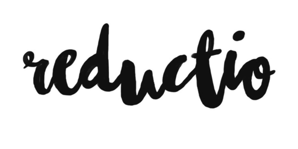

View on GitHub
View on GitHub Reductio Reference
Reductio Reference



Overview
Reductio is a tool used to extract keywords and phrases using an implementation of the algorithm TextRank.
Installation
Swift Package Manager
Simply add Reductio as a dependency to your project’s Package.swift.
.Package(url: "https://github.com/fdzsergio/reductio.git", majorVersion: 0)
Cocoapods
SFFocusViewLayout is available through CocoaPods. To install it, simply add the following line to your Podfile:
pod 'Reductio'
Carthage
You can also install it via Carthage. To do so, add the following to your Cartfile:
github 'fdzsergio/Reductio'
Usage
This is an example of using a text obtained on The Verge:
Oculus rarely brags about its industrial design, but one of the best things it’s done is make something so stereotypically geeky look (relatively) natural. The $599 consumer Rift is full of clever and thoughtful touches, starting with the delightfully soft rubberized carrying case it ships in, which makes the whole thing feel like a cyberpunk hacker’s console. The all-black headset is downright understated by gaming hardware standards, with a front of smooth rubber, sides coated in coarse cloth, and lenses surrounded by a web of lycra. It’s tethered to a PC by a single wire, which runs out your left temple and along one of the adjustable side straps. William Gibson’s best-known foray into virtual reality might be Neuromancer, but the Rift feels more like something from his design-obsessed novel Pattern Recognition — it’s the kind of minimalist product that its brand-allergic, coolhunting protagonist Cayce Pollard might approve of. Getting the Rift to fit right can prove elusive at first. While there’s a small focus knob at the bottom, a lot of the screen’s clarity depends on precisely how it’s angled toward your eyes, and it’s easy to give yourself a headache by strapping it as tightly as possible to keep the best fit. But once you get used to wearing it, the headset feels lighter and more comfortable than most of its competition, sealing against your face with a firm but pliable ring of foam. Since I have yet to break a sweat in the Rift, I can’t say how easy it is to clean, but the ring is removable and replaceable — although there’s no spare included. I also don’t have to deal with wearing glasses, but my Verge colleagues who do have had a positive response — they could either fit the headset over moderately-sized frames or, depending on their prescription, get the screen in focus without them. Along with a cylindrical black tracking camera on a slender 8-inch stand, the Rift comes with two accessories: an Xbox One gamepad and a small, simple device called the Oculus Remote. Unlike Sony and HTC, Oculus isn’t launching the Rift with a full controller of its own, since its Oculus Touch hardware will arrive in the second half of this year. For now, the chunky and colorful Xbox gamepad seems slightly out of place alongside the sleek Rift design. The oval-shaped black remote, by contrast, fits right in, although its construction doesn’t feel as solid as the rest of the system. The Rift is something I’d be happy to have in my living room, and compared to the developer-focused Oculus devices of years past, it’s a breeze to set up. The 4-meter headset tether ends with one USB and one HDMI port, and the tracking camera is plugged in with its own USB cable — there’s no external power cable or controller box for either piece. You’ll just download Oculus’ Windows app and run through a short, though descriptive, setup checklist before getting into VR. Granted, getting to this point requires having a powerful gaming desktop, which can produce plenty of glitches on its own. And since most PCs have only one HDMI port, you’ll need to use a different connection for your monitor, an extra and not totally intuitive step for many people. For the most part, though, it’s as easy as I can imagine installing a totally new kind of computer hardware to be.
Keyword Extraction
Reductio.keywords(text, count: 5) { words in
print(words)
}
["rift", "oculus", "headset", "best", "design"]
Summarization Text
Reductio.summarize(text, compression: 0.80) { phrases in
print(phrases)
}
["Since I have yet to break a sweat in the Rift, I can’t say how easy it is to clean, but the ring is removable and replaceable — although there’s no spare included. ", "While there’s a small focus knob at the bottom, a lot of the screen’s clarity depends on precisely how it’s angled toward your eyes, and it’s easy to give yourself a headache by strapping it as tightly as possible to keep the best fit. ", "The Rift is something I’d be happy to have in my living room, and compared to the developer-focused Oculus devices of years past, it’s a breeze to set up. "]
Acknowledgement
Thanks to @cristinareina for her awesome logo.
License
Reductio is available under the MIT license. See the LICENSE file for more info.
Author
Sergio Fernández, fdz.sergio@gmail.com